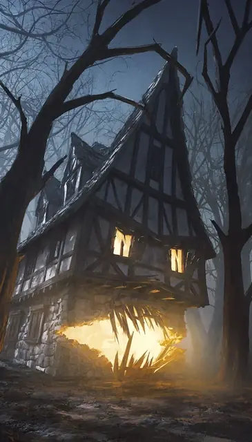

Одержимый ревенант
Haunting Revenant
Громадная Нежить, Нейтральная

Класс Защиты 20 Инициатива +5 (15)
Хиты 203 (14к20 + 56)
Скорость 30 футов
| мод | спас | ||
|---|---|---|---|
| СИЛ | 20 | +5 | +5 |
| ЛОВ | 12 | +1 | +1 |
| ТЕЛ | 18 | +4 | +8 |
| мод | спас | ||
|---|---|---|---|
| ИНТ | 16 | +3 | +3 |
| МДР | 18 | +4 | +8 |
| ХАР | 20 | +5 | +5 |
Сопротивление урону Некротический, Психический
Иммунитеты Яд; Бессознательный, Испуганный, Истощение, Окаменевший, Опрокинутый, Опутанный, Отравленный, Очарованный, Парализованный, Схваченный
Чувства пассивное Восприятие 14, Истинное зрение 60 футов
Языки Общий
Опасность 10 (5 900 опыта; БВ +4)
Особенности
Одержимое пространство. Спасбросок Телосложения: Сл 17, любое существо, сотворяющее заклинание, находясь в пространстве ревенанта. Провал: Заклинание проваливается, а его использование или ячейка тратятся впустую.
Восстановление нежити. Когда ревенант умирает, он возрождается спустя 24 часа, если только на его останки не сотворено Рассеивание зла и добра. Если он возрождается, он оживляет другой объект или постройку Громадного размера где-то на том же плане существования; с этих пор он выглядит по-другому, но использует ту же статистику и возвращается со всеми Хитами.
Действия
Мультиатака. Ревенант совершает два Удара объектом и использует Приглашение.
Удар объектом. Бросок рукопашной или дальнобойной атаки: +9 (с Преимуществом, если цель находится в пространстве ревенанта), досягаемость 10 фт. или дистанция 30/90 фт. Попадание: 27 (5к8 + 5) Дробящего урона.
Приглашение. Спасбросок Харизмы: Сл 17, каждое существо в 60-футовом Конусе. Провал: Цель телепортируется в пространство ревенанта и становится проглоченной. Проглоченное существо обладает Полным укрытием от атак и прочих эффектов, исходящих снаружи ревенанта.
Пока у ревенанта остаются Хиты, проглоченное существо может покинуть пространство ревенанта только при помощи магии, позволяющей межпланарное перемещение, — такой как заклинание Планарный переход.
Бонус мастерства +4
Среда обитания Болота, Город, Леса
Сокровища Любые
Ревенанты
Возмездие с того света
Ревенанты — это мстительные духи, одержимые жаждой возмездия; они вселяются в трупы и другие физические оболочки, чтобы свершить правосудие — или чтобы выплеснуть ярость на тех, кто причинил им зло. Ревенанты не упокоятся, пока те, кого они желают покарать, не будут стёрты с лица мультивселенной. Если тело ревенантов уничтожено, ревенанты обретают новое и продолжают свой беспощадный поход.
Одержимые ревенанты вселяются в развалины и заброшенные места, связанные с их гибелью, — в покинутые здания, остовы разбитых кораблей или груды хлама. Эти ревенанты таятся у всех на виду, дожидаясь приближения своих врагов, а затем запирают жертв внутри собственного громадного тела. Оказавшихся внутри может избивать ожившая мебель или иные, куда более жуткие проявления ненависти ревенанта.
Места, где заводятся одержимые ревенанты, быстро обретают дурную славу.